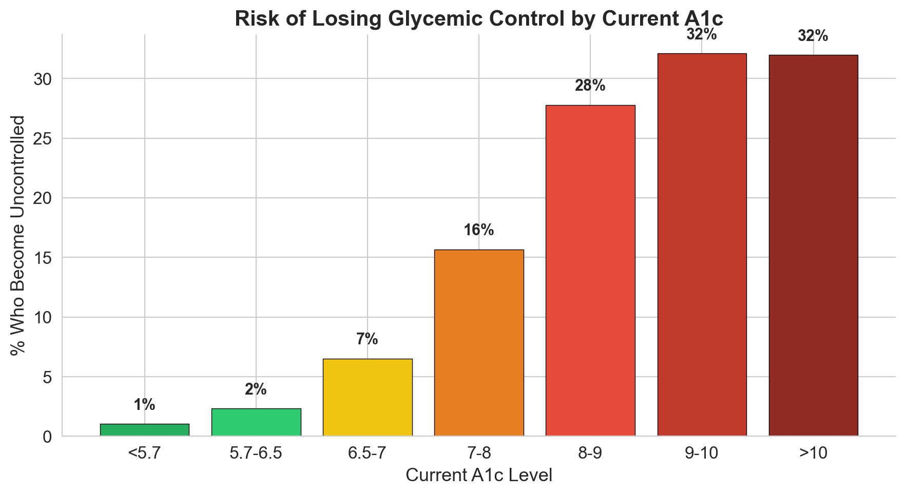
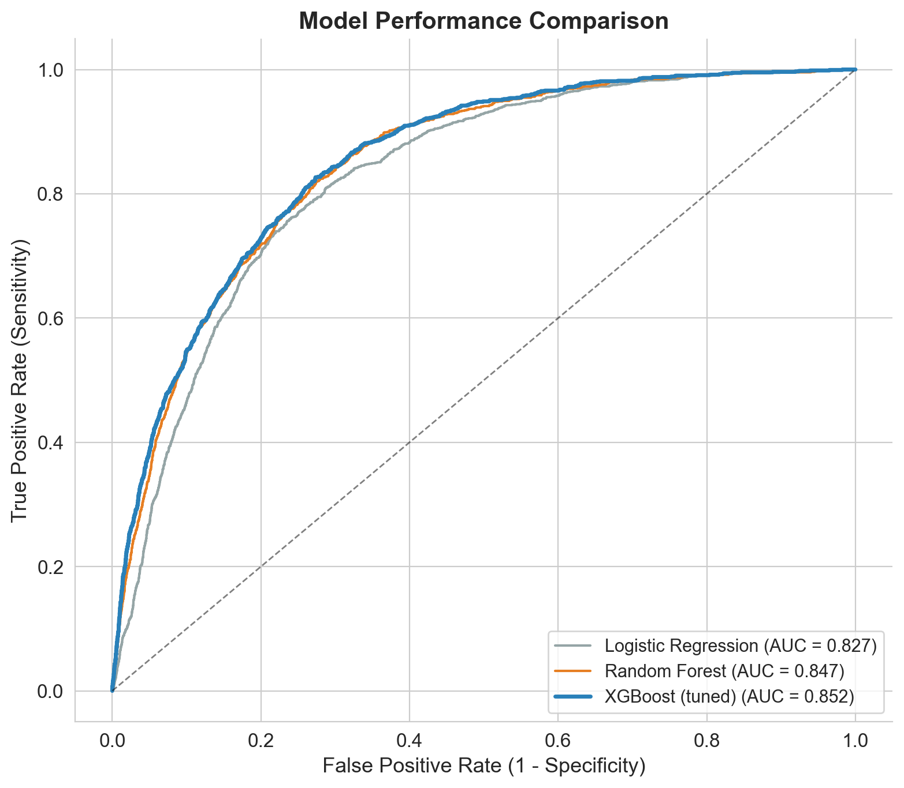
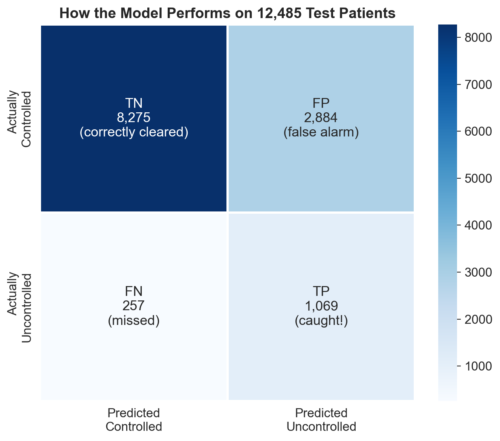
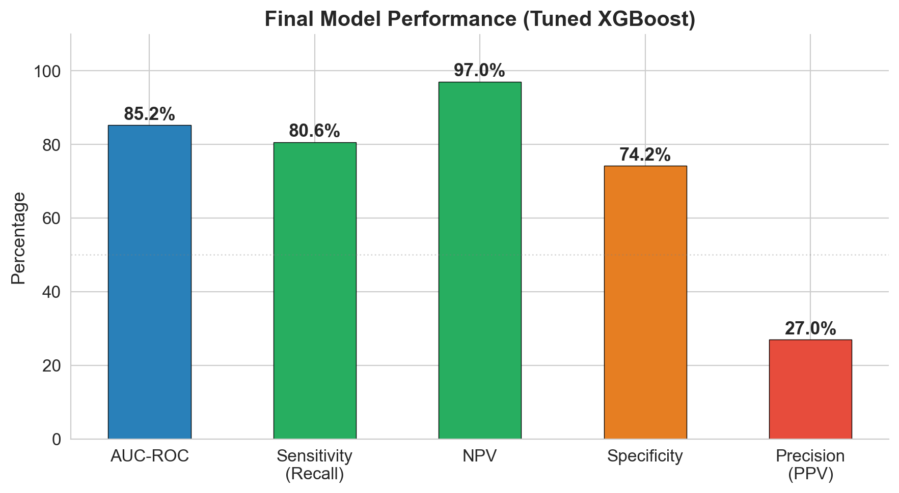
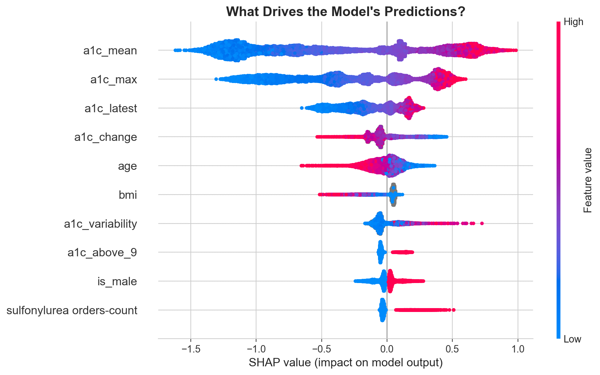
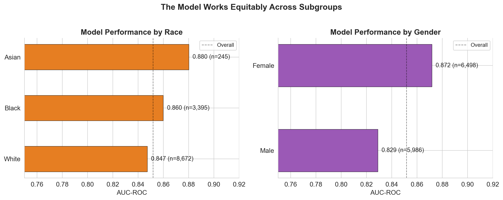

Will this patient's A1c become uncontrolled in the next year? A machine learning model built on 62,425 patients' EHR data to predict diabetes decompensation before it happens.
10.6% of diabetes patients in this EHR dataset will have uncontrolled A1c next year. The challenge: using 12 months of prior clinical data (labs, medications, utilization, demographics), build a model that identifies these patients in advance so care teams can intervene. The data is messy, imbalanced (1:8 ratio), and riddled with missing values and potential leakage.
I spent significant time understanding the data before touching a model. Five exploration steps revealed critical patterns that shaped every downstream decision.

Raw A1c values carry most of the signal, but the engineered features capture clinical nuance that raw columns miss. Three of these became top predictors.
I built progressively: baseline first, then advanced models, then hyperparameter tuning. Each step justified by clear improvement.
Tuning: RandomizedSearchCV with 80 parameter combinations across 5-fold CV (400 fits). Key insight: smaller learning rate (0.01 vs 0.1) + more trees (800) + regularization (gamma=0.3, subsample=0.7) produced the best generalization.

The model catches 81% of patients who will become uncontrolled (sensitivity). But its strongest metric is NPV: if the model says a patient is low risk, there's a 97% chance they truly stay controlled. In a screening context, that's the metric that matters most.
| Metric | Value | What it means |
|---|---|---|
| AUC-ROC | 0.852 | Strong discrimination between controlled and uncontrolled |
| Sensitivity | 80.6% | Catches 4 out of 5 patients who will lose control |
| NPV | 97.0% | If cleared by model, 97% truly stay controlled |
| Specificity | 74.2% | 1 in 4 controlled patients gets flagged (acceptable for screening) |
| PPV | 27.0% | 1 in 4 flagged patients is truly uncontrolled |


SHAP values reveal that mean A1c is by far the strongest driver, followed by max A1c and the most recent reading. But clinically meaningful engineered features like treatment resistance and A1c variability earn their place in the top 10.

The model performs consistently (AUC 0.83-0.90) across all demographic subgroups. It actually catches more uncontrolled patients in minority groups (Black: 85% recall, Asian: 87%) than White patients (79%). Medicaid patients have the highest recall at 91-93%.

The model's operating point can be tuned depending on the clinical context. Lower thresholds catch more patients (better for population-level screening), higher thresholds reduce false alarms (better for resource-intensive interventions).
| Threshold | Sensitivity | Patients flagged | Use case |
|---|---|---|---|
| 0.15 | 96.4% | 7,697 | Population screening, automated nudges |
| 0.30 | 90.6% | 5,552 | Proactive outreach, care coordination |
| 0.50 | 80.6% | 3,953 | Clinical review, medication escalation |
I came into this with a clinical and public health background, not CS. Every step was learned and earned. Three lessons stand out.
From raw CSVs to tuned submission in 16 documented steps. Every decision recorded in a living README. Data exploration (5 steps), cleaning, feature engineering (20 features from 41 raw columns), stratified 80/20 split, progressive modeling (logistic regression, random forest, XGBoost), RandomizedSearchCV tuning (400 fits), SHAP explainability, subgroup fairness analysis, threshold optimization, and presentation-ready figures.
Interested in predictive modeling, clinical ML, or health data science?
Get in touch